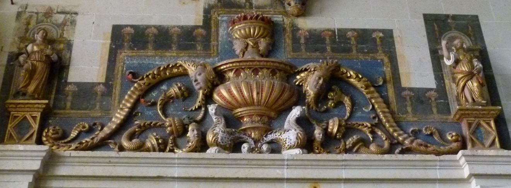

Auteur : Joël Fontanet
ORCID : 0009-0003-7757-8273
Cette recherche en trois parties porte sur la chapelle de la Bourgonnière (Maine-et-Loire), construite au début du XVIe siècle. Elle propose une interprétation de son architecture et de son décor à partir de plusieurs hypothèses concernant les relations entre image, langage, art et pensée spirituelle.
En l'absence de sources écrites contemporaines permettant d'identifier le programme décoratif, la démarche confronte l'observation du monument aux pratiques artistiques et littéraires de la fin du Moyen Âge et du début de la Renaissance.
Les trois études examinent successivement l'hypothèse d'une écriture figurative fondée sur la phonétisation, celle d'un art vivant inspiré de l'imitation de la Nature et celle d'une possible conception de la chapelle comme Temple allégorique de la Concorde.
Chapelle de la Bourgonnière ; Maine-et-Loire ; Première Renaissance ; Renaissance en Anjou ; patrimoine religieux ; histoire de l'art ; architecture Renaissance ; portail sculpté ; gothique flamboyant ; sculpture ; iconographie ; écriture figurative ; Poetrie ; Seconde Rhétorique ; Rhétoriqueurs ; art vivant ; imitation de la Nature ; Temple allégorique ; Concorde.
© Joël Fontanet, 2026